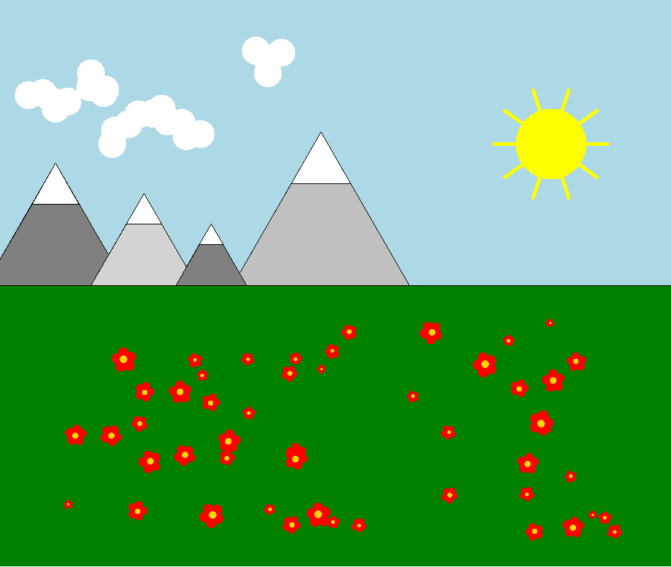
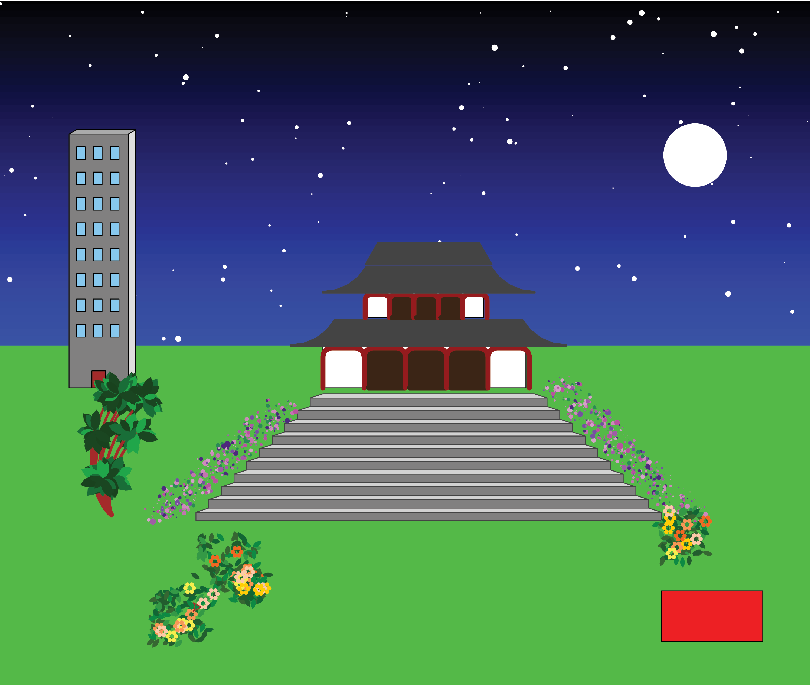
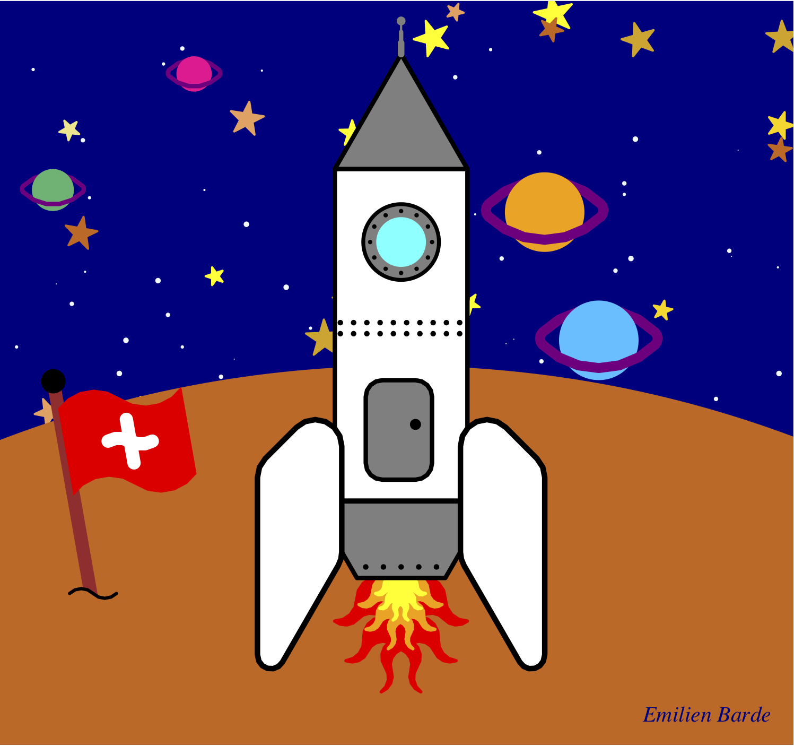
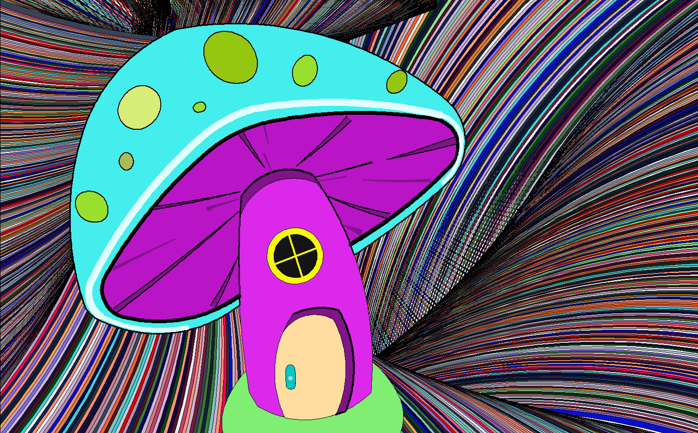

Projet¶
Il est temps de mettre en pratique vos connaissances pour réaliser un dessin libre (avec quelques contraintes). Le projet peut être réalisé par groupe de 2 ou seul.
Template¶
Voici le template (fichier de base) à utiliser pour votre projet. Il vous aidera à structurer correctement votre code.
Vous travaillerez sur l’application Thonny afin de pouvoir sauvegarder votre travail.
Consignes¶
Le cahier des charges est le suivant:
créer un dessin concret et cohérent (pas juste des formes abstraites) sur un sujet libre
au moins 4 (3 si élève seul) objets différents et inédits auxquels on peut donner au moins 2 paramètres (ex: taille et couleur)
chaque objet est défini à l’aide d’une fonction
chaque fonction est décrite en 1-2 lignes de commentaires (voir exemple plus bas)
les objets complexes (plus de 15 lignes de code) sont découpés en sous-fonctions
utiliser des boucles pour répéter des instructions
utiliser des boucles pour parcourir des valeurs (ex: couleurs, tailles, emplacements, etc)
utiliser des dots, cercles, lignes et couleurs
varier l’épaisseur du trait
lever et baisser le stylo entre les objects
utiliser des variables pour nommer les entités (ex: largeur, hauteur, rayon, couleur)
intégrer au moins un élément aléatoire (module
random) dans votre dessinle code est bien structuré (ex: les définitions de fonctions d’abord, puis les appels sont faits en dessous)
(bonus) intégrer un objet particulièrement complexe
Comme pour les exercices récapitulatifs, vous rendrez sur Moodle un fichier .py et une capture d’écran .png.
Plagiat et tricherie
Vous n’êtes pas autorisé à simplement copier-coller du code trouvé dans les exercices, sur Internet où dans d’autres groupes.
Il est cependant autorisé de s’inspirer de code d’autrui et de le modifier pour le faire sien. Dans ce cas, il vous est demandé d’ajouter un commentaire dans le code indiquant sa source. Attention vos objets ne doivent cependant pas être de simples légères modifications (ex: couleur) d’un objet présent dans les exercices.
L’utilisation d’IA génératives telles que ChatGPT est autorisée à des fins d’assistance uniquement. Tout code produit par une IA doit être compris par les membres du groupe et indiqué comme tel dans un commentaire.
Enfin, chaque ligne de code doit pouvoir être expliquée et défendue par le groupe. L’enseignant se réserve le droit d’interroger le groupe sur le code en cas de doute. Un membre du groupe peut avoir une note différente de son binôme s’il est révélé que sa contribution est nettement inférieure.
Exemple¶
L’exemple ci-dessous satisfait toutes les contraintes du cahier des charges.

Copiez-collez le code du dessin dans l’application Thonny pour visualiser comment il est réalisé.
Voir le code
from turtle import *
from random import *
speed(0) # Permet d'accélérer le dessin
# -----------------------------------
# Définissez ici toutes vos fonctions
# -----------------------------------
def triangle(d, c):
# Dessine un triangle équilatéral de longueur d et de couleur c
down()
fillcolor(c)
begin_fill()
for i in range(3):
forward(d)
left(120)
end_fill()
up()
def rectangle(w, h, c):
# Dessine un rectangle de largeur w, de hauteur h et de couleur c
down()
fillcolor(c)
begin_fill()
for i in range(2):
forward(w)
left(90)
forward(h)
left(90)
end_fill()
up()
def montagne(d, c):
# Dessine une montagne de taille d et de couleur c
down()
triangle(d, c)
left(60)
forward(2*d/3)
right(60)
triangle(d/3, 'white')
right(120)
forward(2*d/3)
left(120)
up()
def rayons(n, d):
# Dessine n rayons de soleil de longueur d
down()
color('yellow')
width(5)
for i in range(n):
forward(d)
backward(d)
left(360/n)
color('black')
up()
def soleil(r, n, d):
# Dessine un soleil de rayon r avec n rayons de longueur d
down()
dot(r*2, 'yellow')
rayons(n, d)
up()
def nuage(d, n):
# Dessine un nuage composé aléatoirement de n cercles de diamètre d
down()
for i in range(n):
dot(d, 'white')
left(randint(0, 360))
up()
forward(20)
down()
up()
def fleur(d, n, c_centre, c_petale):
# Dessine une fleur avec un centre de diamètre d et de couleur c_centre avec n pétales de couleur c_petale
up()
for i in range(n):
dot(d, c_petale)
forward(d*0.8)
left(360/n)
left(60)
forward(d*0.7)
dot(d*0.7, c_centre)
# --------------------------------------------------------
# Ecrivez ici les appels de fonctions pour faire le dessin
# --------------------------------------------------------
dot(10000, 'green') # Background vert
up()
goto(-500, 0)
down()
rectangle(1000, 1000, 'lightblue') # Ciel
# Dessin des 4 montagnes
montagne(200, 'grey')
forward(150)
montagne(150, 'light grey')
forward(200)
montagne(250, 'silver')
backward(80)
montagne(100, 'grey')
# Dessin du soleil
goto(300, 200)
soleil(50, 10, 80)
# Dessin des nuages aux coordonnées prédéfinies dans une liste
for coords in [(-400, 250), (-350, 300), (-320, 200), (-250, 250), (-100, 300)]:
goto(coords)
nuage(40, 5)
# Dessin de 50 fleurs disposées aléatoirement dans l'herbe
for i in range(50):
x = randint(-400, 400)
y = randint(-350, -50)
taille = randint(5, 15)
goto(x, y)
fleur(taille, 5, 'gold', 'red')
hideturtle() # Cache la tortue
done()
Plus d’exemples¶
Ces exemples ont été créés par des élèves en 3M, en option complémentaire informatique. Ils sont plus complexes que ce que vous allez faire mais peuvent servir d’inspiration.
Jeu vidéo¶

Maison de campagne¶

Cadre des Pyrénées¶
Japon¶

Swiss space¶

Maison meublée¶
Casque d’astronaute¶

Urbain et rural¶

Star Trek¶

Loup sous la lune¶
Fantaisie psychédélique¶

Bateaux de pêche¶